Raúl Pérez
Senior Product & Interaction Designer
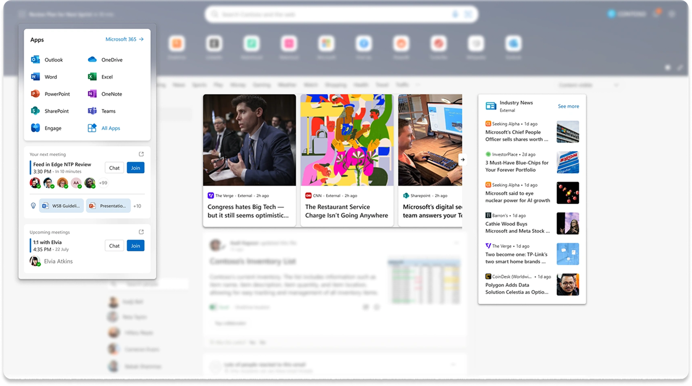
Some of the interventions that were proposed
👨🚀 My contribution
As a Senior Product Designer on the Microsoft 365 Studio, my main focus was to:
Work closely with PMs, Design Managers, and Devs from different neighbor Microsoft 365 product teams (from Teams, Outlook, Windows 11, To Do, Search and Edge) in order to articulate our goals and clearly define the features scopes to drive improvements in Microsoft Feed's discoverability and retention on the New Tab feature.
Led internal research to learn about the hypothesis and results from other teams at the M365 Core Studio (such as Microsoft Teams, Outlook & Microsoft 365 Chat), in order to navigate on deep ambiguity that the incubation processes required.
Facilitate the experimentation process by designing their main architecture, wireframes, user flows, mockups and prototypes for new interactions systems that expanded on our current A11y & Fluent standards, to keep the discussion going and refine our ideas.
Propose roadmaps with scalable stages of each new feature, since the MVP of them needed to be resourceful, in order to act fast, and consistent, to holistically improve the experience of the whole product.
Helped different teams to maintain consistency and quality standards among their projects by improving the Fluent UI design system library for productivity features on mobile and desktop.
✏️ Key actions — Some topics to chat about
Collaborate with the Design Research team
User's Journey Maps
Desktop, Android and iOS interface implementation
Defined Design Concepts along with PMs, Devs and Design manager
Workshops
Roadmap documentation
Sketches, Wireframes and Mockups
Generative AI implementation
Accessibility (A11y) standards
Fluent Design System: Usage + Contribution
🏆 Goals
Our main goal with the Work Feed on the New Tab from Edge for Business is to make people able to discover relevant information from their work in just a glimpse. They should be able to scan their teammates activity on different Microsoft 365 products, such as Outlook emails, Teams meetings or updates on the documents they're working on.
Microsoft Edge + Windows for Business
Edge for Business was anounced on May 2023 during the Microsoft Build conference. It was created to benefit productivity and security while browsing on the internet, especially focusing on separating work and personal browsing for hybrid workers.
This focus gave the team the opportunity to focus on a narrow user niche with very specific needs, and articulate this product goals with the ones that had been explored on other projects, such as Work Feed, the transformation of the New Tab feature and Company News.
Microsoft Edge for Business | The new, dedicated work experience for Edge
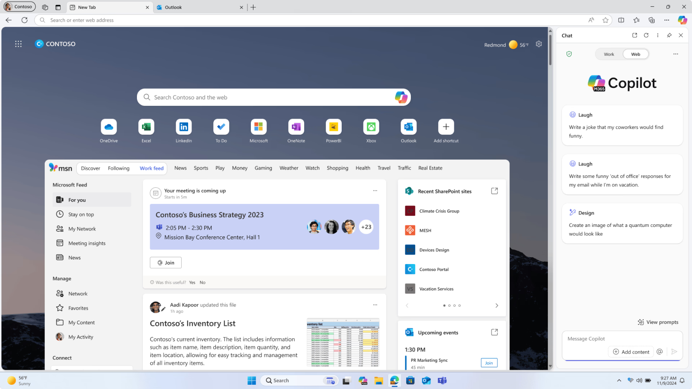
Microsoft Feed is a relatively new product that helps people to connect with their coworkers by letting them discover and learn about their interests, teams and projects they're working with. It shows you a mix of content and activity from everything related to the Microsoft 365 suite.
Its main features are:
Discover relevant updates and progress related to important collaborations
Discover and learn new insights about your colleagues and people in your network
Prepare for meetings or learn what happened in meetings you couldn’t attend
Discover useful content related to your company or topics you're interested in
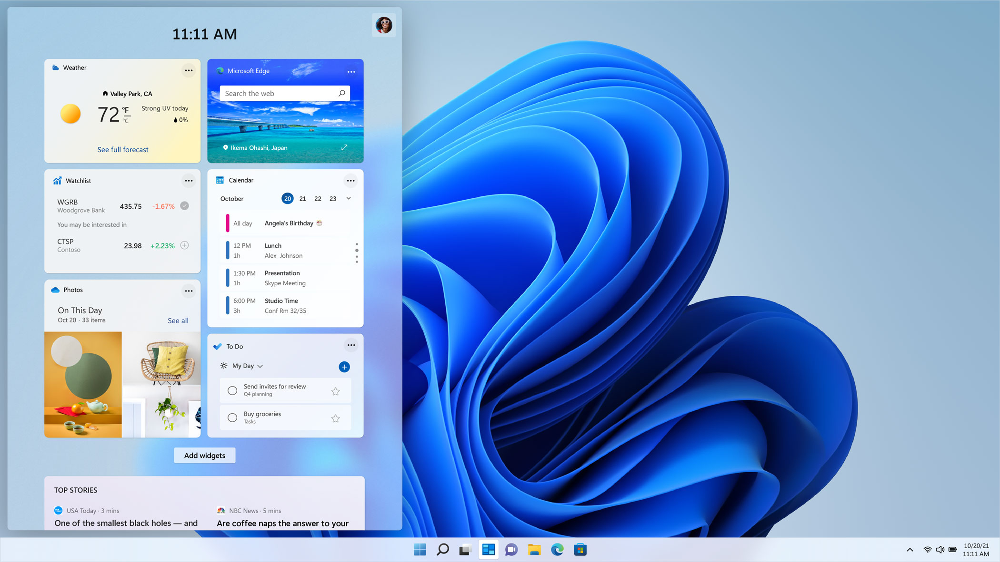
The widget panel on Windows 11 can provide quick access to information from different sources, such as the Weather app, Watchlist, Traffic or News.
There is an active effort to bring productivity apps from the Microsoft 365 ecosystem for the enterprise users, such as Industry News and Meeting Insights, along with other ones that has been already implemented, like Outlook Calendar, Outlook's Inbox, and To Do.
Product Designer
My main contribution during my time at this team was related to improving the usage, discoverability and retention metrics by contributing on the process to develop different features, such as:
New Workfeed widgets
New Windows 11 productivity widgets
Personalization capabilities for Edge's "New Tab"
Industry News experience
Onboarding for First Time Users
Information Architecture for deep re-structure of the Work Feed
High Contrasts, Keyboard navigation & Screen Reader accessibility standards for our backlog features
Smart Components for the Fluent Design System Library for AI related interactions on desktop and mobile.
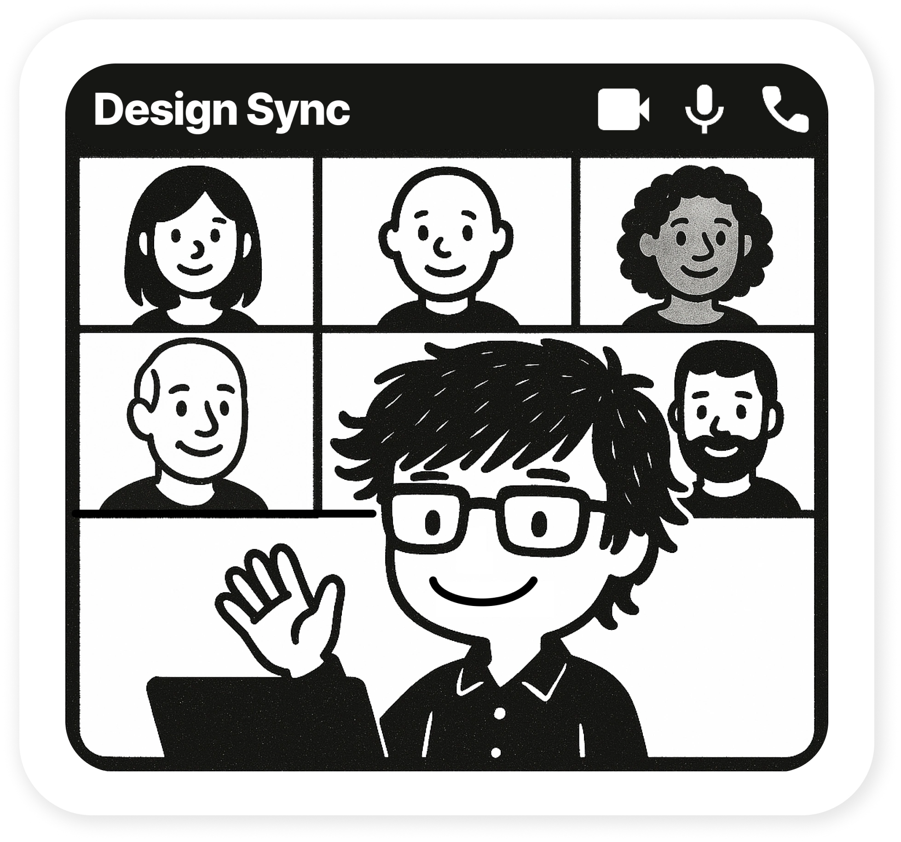
"Can you hear me?"
"Your Next Meeting" - Enterprise widget on "New Tab" and Windows 11
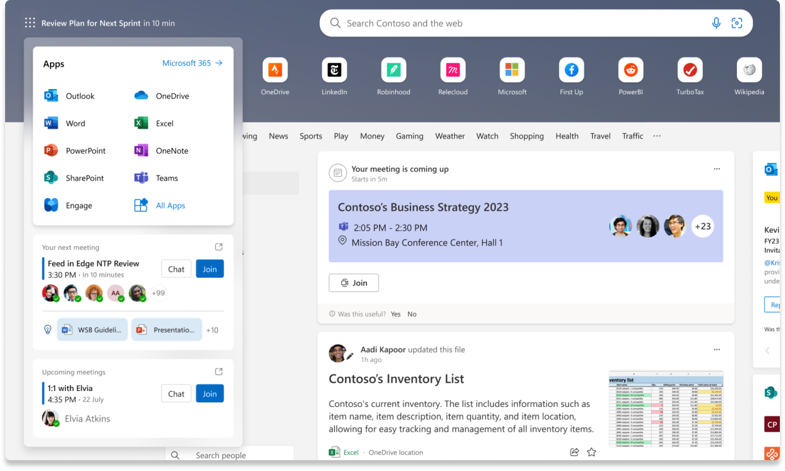
Waffle Menu implementation on Edge's Work Feed
This module is meant to leverage the information that M365 suite and AI can gather an process in order to provide significant insights about your next meeting, such as:
Meeting name
Timestamp
Duration
RSPV
Location
Members
Link to Teams
Chat
Join
Expand
Latest shared files, relevant for the meeting purpose
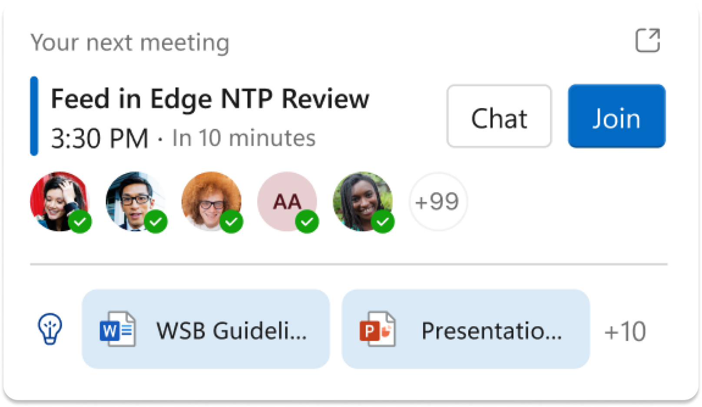
How much relevant info can we get into this tiny space?
The module's system for the notification should be able to display every possible variable for different kind of meetings in a feasable way, such as:
Just 1 person was invited
2 to 5 people were invited
more than 5 people were invited
Short title
Long title
Physical location
Remote meeting
Microsoft Team's group available
Microsoft Team's group unavailable
Just 1 relevant file located
2 relevant files located
More than 2 relevant files located
Next meeting
Relevant upcoming meetings
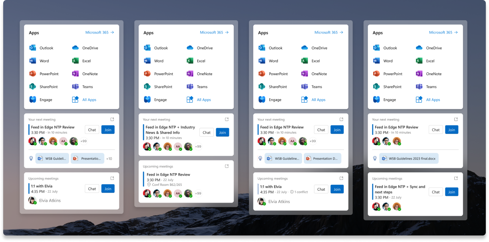
Component variables
Industry News
This module was originally designed for the right pane of the Work Feed, in order to provide relevant news related to each user's profession. It is also a key intervention for Microsoft's Business, since "News" is one of the main ways in which the product generates profits.
The card should display
At least 6 relevant news
Its title
Thumbnail
When was it published
Order them by relevance, according to the user's activity and the time that it was published
State that the links are from external sources
Link to the main News section
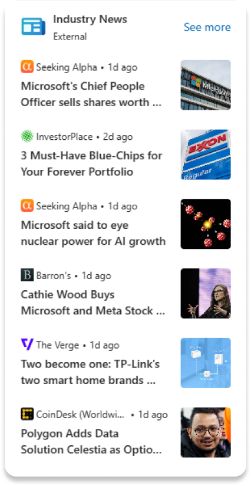
Right pane widget (Shipped and successful!)
A mockup for the "Feed" section of the "New Tab", it was one of the 17 variables that we were able to design. It is currently on production and expected to be shipped soon, as the Industry News began to generate tracktion among Edge's users.
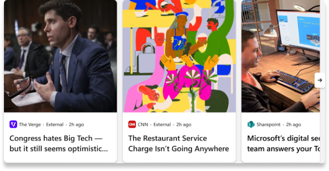
Carousell mockup
Notification
As we progress on our main goal with the New Tab on Edge, we are learning from our first internal experiments and data from user's behavior in order to expand on this vision, by designing new ways to articulate the user flows from all the productivity features that we currently have on Windows 11, our AI capabilities and every Microsoft 365 product.
This led us to create a couple of modules to invite new people to join the experience, such as this notification which was launched on August 2024.
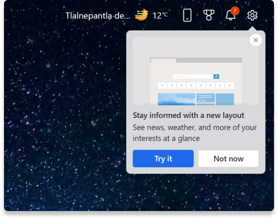
Invitation for a the Business Layout (Shipped and successful!)
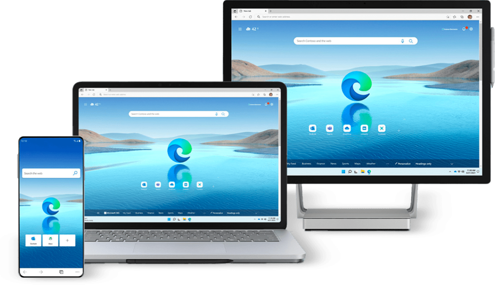
:)
Role: Senior Product Designer · Core team
Role: Product Designer
Role: Senior Product Designer · Core team
Role: Product & Interaction Design Team Lead